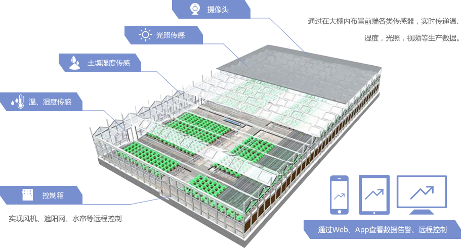
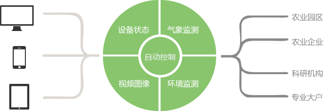
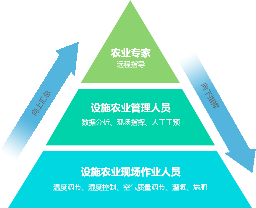
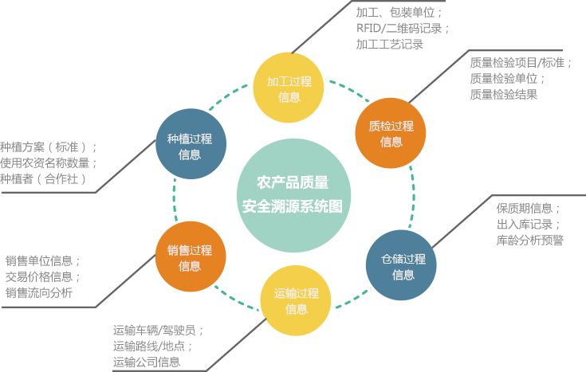

平台结构

平台功能
生产种植环境监测
利用Web服务器，及PC终端应用层专业控制软件，用户可在本地数据库调用现场实时视频录像、按周期采集的温湿度、土壤成分、土壤温度、空气成分、光度、降水量、大气、风力风速等环境参数，用户在个人PC或者手机终端上可以查看，并根据这些数据与现场图像，在远程对农场进行操作。除此之外，数据还能汇聚至系统平台供实时跟踪、汇总分析统计，为改进种植方式、提高产量提供数据分析基础。


病虫害防治监测
对于农作物生产种植过程中所面临的病虫害威胁，使用高清视频采集装置，实时记录和采样收集作物的病害预防状态。种植专家使用系统平台并通过实时视频和抽样图像可远程定位查看和分析作物状态，结合种植知识库给出预防治疗建议。增加病害预防的准确性和成功率;降低病害发生的几率和服务治疗成本。
生产管理及追溯服务
建设基于农作物种植流程和日常生产管理系统。利用环境监测系统中所采集的数据，从流程上对翻土、栽培、日常维护、到采摘、加工、冷藏、运输、销售等全过程进行管理。
建设农作物追溯系统。结合种植过程中的环境监测信息、生产管理中的具体作业环节为每批农作物发放“身份证”，提升产品质量、树立品牌形象、提高客户关注和认可度。
